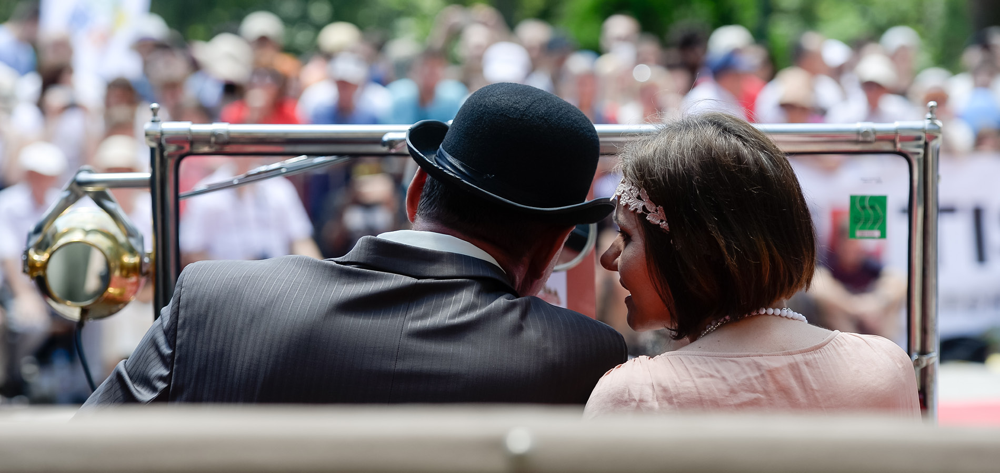

- 
"Concursul de eleganță Sinaia"
Prezentare
Concursul de Eleganţă Sinaia (C.E.S.) este un eveniment F.I.V.A. A dedicat vehiculelor istorice, organizat de Retromobil Club România (R.C.R.) sub Înaltul Patronaj al ASR Principele Radu al României, in parteneriat cu Primaria Orasului Sinaia si Muzeul National Peles.Domeniu Regal Peleş găzduiește concursul an de an în ultima sâmbătă a lunii iunie, fiind cadrul perfect pentru desfășurarea acestui eveniment.
Lansat de Automobil Clubul Român Regal (A.C.R.R.) în 1934, reluat de R.C.R. în 2011, evenimentul oferă miilor de spectatori prezenți şansa de a descoperi automobile rare şi elegante, precum şi poveştile extraordinare din spatele acestora. Concursul de Eleganţă Sinaia are un caracter internaţional avand an de an personalități de seamă în juriu.
Începuturile, o tradiţie interbelică
Concursul de Eleganţă Sinaia are o tradiţie specială cu origini interbelice. Evenimentul a apărut în anii dintre cele Două Războaie Mondiale, o perioadă deosebită pentru povestea automobilului în România. Este momentul în care piloţi români se distingeau în competiţii internaţionale, aşa cum sunt memorabilele victorii ale lui Petre Cristea la Monte Carlo în 1936, cu un model Ford V8 sau pe Nürburgring cu un BMW 328. Au loc competiţii importante cu prezenţă internaţională, aşa cum este cursa de coastă de pe Feleac sau Marele Premiu Internaţional al Bucureștiului, unde, la finalul anilor ’30 participă celebrul pilot al vremii, Hans Stuck, cu un model Auto Union de Gran Prix. Inginerii români au realizări importante, Aurel Persu, pune bazele aerodinamicii automobilelor iar Jean Calcianu, care este recrutat de însuși Ettore Bugatti pentru a lucra la faimoasa marcă. În 1936, Ford deschide o primă fabrică de automobile în România, în Bucureşti, producând, printre altele, şi faimosul Ford V8.
În acest context, Concursul de Eleganţă Sinaia a fost organizat de Automobil Clubul Român Regal (A.C.R.R.) de două ori în perioada interbelică, în 1934 şi apoi în1935. Acest fapt situează România în rândul primelor state din lume în care s-au organizat astfel de manifestări, demonstrând încă o dată faptul că anii interbelici au constituit perioada de apogeu a automobilismului românesc.
După o pauză de aproape 80 de ani, Concursul de Eleganţă Sinaia a fost reluat în 2011, organizat de Retromobil Club România, fiind dedicat vehiculelor istorice. Evenimentul se bucură de participare internaţională, fiind inclus în calendarul F.I.V.A. (www.fiva.org) şi desfăşurându-se în spiritul unui "concours d’elegance" modern.
Ediția 1934
Prima ediţie a „Concursului de Eleganţă şi Confort” s-a desfășurat în 11-12 august 1934, sub înaltul patronaj al MS Regelui Carol II.
S-a concurat pe patru categorii, primele locuri fiind ocupate de:
- Lilette Butculescu (Chrysler Imperial) - Categoria "Trasuri deschise"
- Roxana Soutza (Delage) - Categoria "Trasuri inchise"
- Marie Loiuse Costinescu (Chrysler) - Categoria "Trasuri aerodinamice"
- Ion Matak (Rolls Royce) - Categoria "Caroserii transformabile"
Ediția 1935
În anul 1935 (3-8 septembrie) Automobil Clubul Regal Roman organiza Săptămâna Automobilului, eveniment ce cuprindea : Rallye Sinaia, Cupa Carpaților, Cursa de Coastă şi Concursul de Eleganţă şi Confort. Astfel, a doua ediție a Concursul de Eleganţă şi Confort a fost organizat în data de 7 septembrie 1935, cu sprijinul Societății Marilor Hoteluri şi Cazinouri din Sinaia. Seara de la orele 22 s-a desfășurat un Mare Bal la Palace Hotel, pentru sporirea fondului sportiv si de semnalizare A.C.R.R.. Un juriu delegat de A.C.R.R. a ales cele mai elegante şi mai confortabile „trăsuri” stabilind un clasament pe grupe si clase. La concurs au participat 22 de automobile. A fost întocmit un clasament special de eleganţă rezervat doamnelor care au trebuit să-şi armonizeze ţinutele, prin linie si culoare, cu automobilul prezentat.
Au fost decernate următoarele premii:
- Premii pentru eleganta si confortul automobilelor
- Marele premiu de onoare, toate categoriile (placheta de aur şi Cupa Cazinoului)
- 2 Mari premii de excelenţă (plachete de aur)
- Premiu de excelenţă (placheta de argint)
- Premii pentru fiecare clasă (10 medalii de aur, 10 de argint, 10 de bronz).
Premii pentru eleganta doamnelor:
- Premiul de excelenţă (obiect de artă)
- I, II, III (obiect de artă)
- Medalii de argint, amintire pentru toți concurenții.
În numărul 21 din 12 septembrie 1935, ziarul MOTOR prezenta numeroase fotografii de la cele 4 competiții. Concursului de eleganţă i s-a alocat din pacate un spatiu restrans. Iată textul integral: „Daca Săptămâna Automobilului a rezervat iubitorului de performanţe sportive nenumărate ocazii de afirmare, ea n-a uitat pe cei care vor sa vadă pana unde a ajuns rafinamentul constructorilor, carosierilor si automobilistelor (din punct de vedere al toaletelor lor, puse in concordanta cu ansamblul general al caroseriilor). Concursul de eleganţă a fost o fericită desfășurare de lux, culori frumoase, caroserii fermecătoare, dublat de un adevărat concurs de frumusețe. A fost o zi mare de glorie pentru Auto Union care a obținut atât Marele Premiu de Onoare cât şi cel de Excelenţă, precum şi nenumarate distincţii".
Din explicațiile fotografiilor prezentate pe prima pagina a ziarului aflam si numele câștigătoarei, domana Mony Magheru, care a concurat cu un automobil Horch 850 Sport (proprietatea deputatului Gheorghiu). Premiul de excelenţă a fost câștigat de domana Schmitzer care a concurat cu tot un Horch (proprietatea domanei Arcizewski - dupa înmatricularea mașinii membră a Corpului Diplomatic). Ziaristul menționează în articol Auto Union, grup din care făcea parte şi marca Horch.
{kind=link}
- 2019 Ediția
- 4 Țări participante
- 8 Categorii
- 36 Automobile în competiție